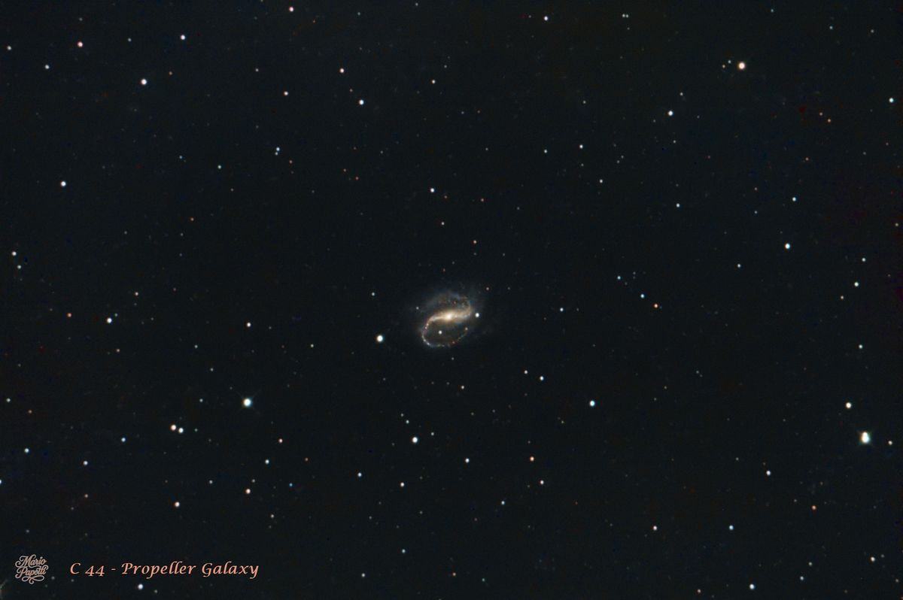
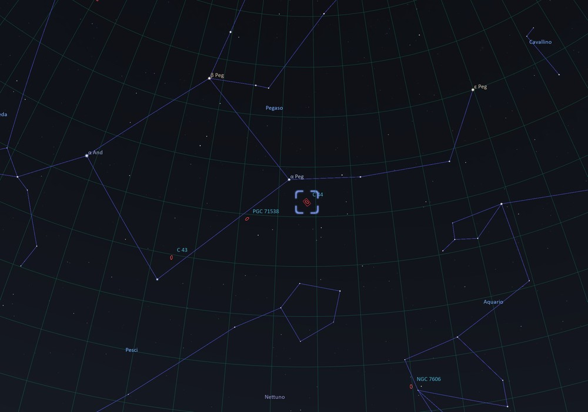

Caldwell 44 • NGC 7479 • Costellazione del Pegaso Caldwell 44 • NGC 7479 • Pegasus

Nelle serate del 13 e 14 ottobre 2026 ho ripreso la galassia Caldwell 44 (C 44), conosciuta anche come NGC 7479 e con i soprannomi inglesi Propeller Galaxy e Superman Galaxy. Il nome Propeller, talvolta tradotto come Galassia Elica, richiama la forma dei suoi bracci. Questa denominazione si riferisce alla galassia NGC 7479 e non alla Nebulosa Elica, che è un oggetto diverso. On the nights of October 13 and 14, 2026, I photographed Caldwell 44 (C 44), also known as NGC 7479 and nicknamed the Propeller Galaxy or Superman Galaxy. The name Propeller refers to the shape of its arms. This nickname refers to galaxy NGC 7479, not to the Helix Nebula, which is a different object.
Questa galassia fu scoperta nel 1784 dall'astronomo William Herschel. Dalla vistosa barra centrale si dipartono i bracci a spirale, che disegnano una caratteristica forma a S rovesciata e ruotano in senso antiorario. This galaxy was discovered in 1784 by astronomer William Herschel. Its prominent central bar gives rise to spiral arms that form a distinctive backward S and rotate counter-clockwise.
Una caratteristica peculiare emerge nelle osservazioni radio: il getto che si estende dal nucleo si incurva in senso opposto alla struttura a spirale osservata nella luce visibile. Gli astronomi hanno proposto che una passata interazione, forse una fusione minore con un'altra galassia, possa aver contribuito a questa configurazione; il legame è un'ipotesi, non una certezza. Radio observations reveal a distinctive feature: the jet extending from the nucleus bends in the opposite sense to the spiral structure seen in visible light. Astronomers have proposed that a past interaction, possibly a minor merger with another galaxy, may have contributed to this configuration; this connection remains a hypothesis rather than a certainty.
All'interno di C 44 nel 1990 e nel 2009 sono state osservate esplodere due supernove: SN 1990U e SN 2009jf. Queste esplosioni disperdono nello spazio elementi chimici prodotti dalle stelle, contribuendo ad arricchire il gas da cui potranno formarsi nuove generazioni stellari. C 44 presenta inoltre regioni di intensa formazione stellare lungo i bracci e la barra; le osservazioni indicano che una forte attività di formazione stellare nella barra risale a circa 100 milioni di anni fa. Oggi sono visibili numerose stelle giovani e brillanti di recente formazione emergere dai bracci a spirale e dal disco galattico. Within C 44, two supernovae—SN 1990U and SN 2009jf—were observed exploding in 1990 and 2009, respectively. These explosions disperse chemical elements produced by stars into space, helping enrich the gas from which later generations of stars may form. NGC 7479 also has regions of intense star formation along its arms and bar; observations indicate that strong star formation in the bar took place about 100 million years ago. Today, numerous young, bright stars that have recently formed can be seen emerging from the spiral arms and the galactic disk.
| NomeName | Galassia Propeller (Galassia Elica)Propeller Galaxy |
| CataloghiCatalogues | Caldwell 44 (C 44) • NGC 7479 • UGC 12343 • PGC 70419 |
| CostellazioneConstellation | PegasoPegasus |
| DistanzaDistance | circa 105 milioni di anni luceabout 105 million light-years |
| Tipo di oggettoObject Type | Galassia a spirale barrataBarred spiral galaxy |
| Dimensione apparenteApparent Size | circa 4,1′ × 3,1′about 4.1′ × 3.1′ |
| Magnitudine apparenteApparent Magnitude | circa 11,6about 11.6 |
| Classificazione del nucleoNuclear Classification | LINER • Galaxy Seyfert 1.9 |
Le misure di distanza, magnitudine e dimensione apparente possono differire leggermente tra cataloghi e fonti. Qui riporto i valori indicativi scelti per questa scheda. Distance, magnitude and apparent-size measurements can vary slightly among catalogues and sources. The approximate values selected for this page are shown here.
Una galassia di Seyfert è una galassia con un nucleo molto luminoso e attivo. Al centro si trova un buco nero supermassiccio. Quando gas e polveri si avvicinano al buco nero e cadono nel suo disco di accrescimento, vengono compressi e riscaldati a temperature elevate, emettendo intensa radiazione. In alcune galassie di Seyfert il nucleo può brillare più della luce combinata delle stelle della galassia; ciò dipende dall'oggetto e dalla banda osservata. A Seyfert galaxy has a very bright, active nucleus. At its centre is a supermassive black hole. As gas and dust approach the black hole and enter its accretion disk, they are compressed and heated to high temperatures, producing intense radiation. In some Seyfert galaxies, the nucleus can outshine the combined starlight of the galaxy; this depends on the object and the wavelength observed.
LINER è l'acronimo di “Low-Ionization Nuclear Emission-line Region”, cioè regione nucleare con righe di emissione a bassa ionizzazione. La classificazione descrive lo spettro della luce emessa dal gas nel nucleo: in parole semplici, il gas è ionizzato meno intensamente rispetto a quello tipico di una galassia di Seyfert. Le possibili sorgenti di questa emissione comprendono un nucleo galattico attivo, onde d'urto e stelle evolute calde; l'importanza relativa di ciascun processo può variare da una galassia all'altra. LINER stands for “Low-Ionization Nuclear Emission-line Region.” The classification describes the spectrum of light emitted by gas in a galaxy's nucleus: in simple terms, the gas is less strongly ionized than the gas typical of a Seyfert galaxy. Possible sources of this emission include an active galactic nucleus, shocks and hot evolved stars; the relative importance of each process can vary from one galaxy to another.
Si parla di starburst quando in una galassia si formano stelle a un ritmo molto superiore a quello consueto per un periodo relativamente breve. Grandi quantità di gas si addensano e collassano, dando origine a nuove stelle. Un'interazione o un passaggio ravvicinato tra galassie può contribuire a innescare o intensificare questo processo. Nel caso di C 44, gli studi descrivono formazione stellare lungo le braccia e la barra e indicano un episodio particolarmente intenso nella barra circa 100 milioni di anni fa. A starburst is a period when a galaxy forms stars at a much higher rate than usual. Large amounts of gas gather and collapse to form new stars. An interaction or close passage between galaxies can help trigger or intensify this process. In NGC 7479, studies describe star formation along the arms and bar and indicate a particularly strong episode in the bar about 100 million years ago.
C 44 presenta caratteristiche associate sia alle galassie di Seyfert sia alle LINER: il suo nucleo mostra un'emissione tipica di un nucleo attivo e righe di emissione del gas a bassa ionizzazione. Queste etichette descrivono proprietà osservate dello spettro e non sono sempre categorie del tutto separate. Perciò la stessa galassia può essere classificata in entrambi i modi secondo le osservazioni e i criteri utilizzati. Questa classificazione del nucleo è distinta dalla formazione stellare osservata nella barra e nelle braccia. C 44 shows properties associated with both Seyfert galaxies and LINERs: its nucleus displays emission characteristic of an active nucleus as well as low-ionization emission lines from gas. These labels describe observed spectral properties and are not always completely separate categories. The same galaxy may therefore be classified in both ways depending on the observations and criteria used. This nuclear classification is distinct from the star formation observed in the bar and arms.
La galassia C 44 (NGC 7479) si trova nella costellazione boreale del Pegaso, non lontano dal Grande Quadrato di Pegaso. In cielo si trova circa 3° a sud della brillante stella Markab (Alfa Pegasi). Galaxy C 44 (NGC 7479) lies in the northern constellation Pegasus, not far from the Great Square of Pegasus. It is located about 3° south of the bright star Markab (Alpha Pegasi).

Questa immagine è stata ottenuta integrando: This image was obtained by integrating:
Riprese effettuate nelle serate del 13 e 14 ottobre 2026 dal cielo di Nole (TO). Captured on the nights of October 13 and 14, 2026, from Nole, near Turin, Italy.
| TelescopioTelescope | Tecnosky RC8 - 1600 mm |
| Camera di ripresaImaging Camera | ZWO ASI 294 MC Pro |
| Telescopio guidaGuide Scope | 60/240 mm |
| Camera guidaGuide Camera | ZWO ASI 120 MM Mini |
| Montatura equatorialeEquatorial Mount | Sky-Watcher HEQ5 SynScan GOTO |
| AcquisizioneAcquisition | ZWO ASIAIR Pro |
| ElaborazioneProcessing | PixInsight |
L'immagine è stata elaborata in RGB con PixInsight. The image was processed in RGB using PixInsight.